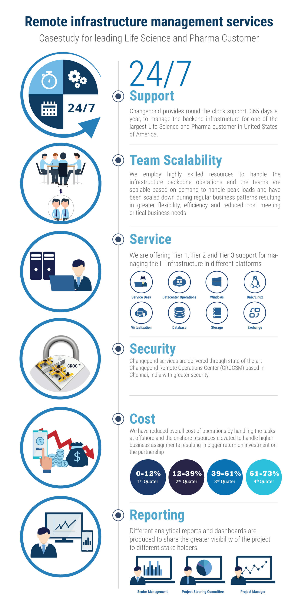

{kind=link}

The success of any enterprise organisation relies on leveraging its IT infrastructure as a strategic asset. CHANGEPOND truly understands the science and business of the managing Business-As-Usual and Change-the-Business Infrastructures. Thanks to our early evolution in 2003 from a established Enterprise IT player to a pioneering Digital IT organization managing large scale New Media infrastructure & networks powering heavy duty systems for high availability, high traffic and rich media consumption.
Remote Managed IT Infrastructure Services from CHANGEPOND provides access to traditional Datacenter and infrastructure skill sets to support your current or planned environment in your existing facility or in a remote, 3rd party facility.
Service offerings:
We perform implementation services for initial setup and configuration of servers and provide management services including monitoring, security hardening and administration, problem solving, etc.
Service offerings:
An optimized infrastructure that is agile and flexible will help deliver measurable business value - enabling clients to adjust to changing business scenarios through IT.
Service offerings:
With the multifold increase in Applications & analytics spend, our database services helps maximize the availability and reliability of databases through proactive management, maintenance and monitoring, allowing our customers to focus on their core activity. Our teams are experienced in working with 3rd party application providers and can facilitate the control of 3rd party access, action required tasks and maintain database environments as per ITIL process.
Data Warehousing is a key step in the process of garnering insights from the raw data that your customers and business operations generate every day.
Maintenance services offerings including: